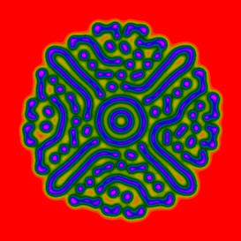
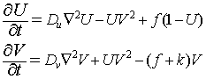
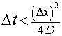

U concentration at t=5000 with Du=0.2, Dv=0.1, f=0.03 and k=0.06.
The Gray-Scott Reaction Diffusion Model displays the spatial concentration of chemical species U and V under the influence of diffusion and the autocatalytic reaction U+2V->3V and V->P where P is inert. This reaction-diffusion system can be modeled by the following coupled partial differential equations.

The UV^2 term represents the U+2V->3V reaction and is negative in the first equation because it decreases U and positive in the second equation because it increases V. The flow rate f represents the constant addition of U and the terms -fU and -fV represent the removal due to that flow. The k reaction rate represents the removal of V by the reaction V->P. The simulation shows that this system has a surprising variety of spatiotemporal patterns when starting in the initial state U=1 and B=0 except for a square grid at the center where U=1/2 and V=1/4.
The following table gives suggested values assuming Du=0.2 and Dv=0.1.
| Pattern | f | k |
|---|---|---|
| spots | 0.02 | 0.055 |
| regular spots | 0.015 | 0.055 |
| mitosing spots | 0.03 | 0.0625 |
| labyrinth I | 0.05 | 0.0625 |
| labyrinth II | 0.035 | 0.06 |
| spawned spots | 0.05 | 0.06 |
| spots to stripes | 0.03 | 0.057 |
| kaleidoscope | 0.015 | 0.05 |
| periodic | 0.015 | 0.045 |
Note that the Gray-Scott Reaction Diffusion Equation Model uses scaled diffusivities Du and Dv so that the cell size dx=dy=1 and the cell-to-cell diffusion times are of the order of unity. Users may change the NxN grid but may need to adjust the timestep if the diffusivity is changed in order to maintain stability. This stability criterion limits the timestep for the 2D diffusion equation to

where D is the largest diffusivity.
The Gray-Scott Reaction Diffusion Equation Model was developed by Wolfgang Christian using the Easy Java Simulations (EJS) version 4.3 authoring and modeling tool.
You can examine and modify a compiled EJS model if you run the model (double click on the model's jar file), right-click within a plot, and select "Open Ejs Model" from the pop-up menu. You must, of course, have EJS installed on your computer. Information about Ejs is available at: <http://www.um.es/fem/Ejs/> and in the OSP ComPADRE collection <http://www.compadre.org/OSP/>.